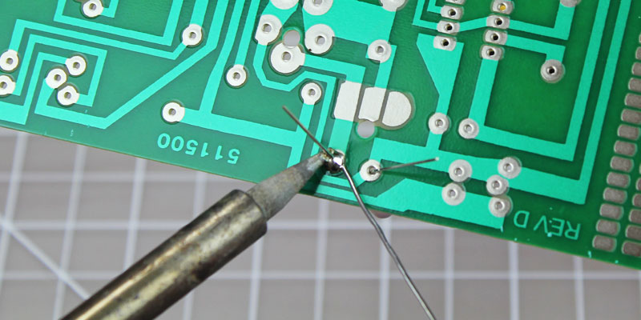

Soldering is a way to ensure a permanent electrical connection between two conductors. The conductors are heated so that, when the melted solder flows over them, there is a strong bond. Incorrect soldering can lead to problems later so it is important to learn to solder correctly.
You will need to have the items you wish to solder secured in some way. You may use a vice, a c-clamp, or helping hands. You will need a fine-point soldering iron, solder, and a lightly damp sponge.
Sometimes it nessecary to remove solder you have applied. Either to remove a part or because there is excess solder.
Reheat the solder with your iron and apply solder wick or use a solder sucker.